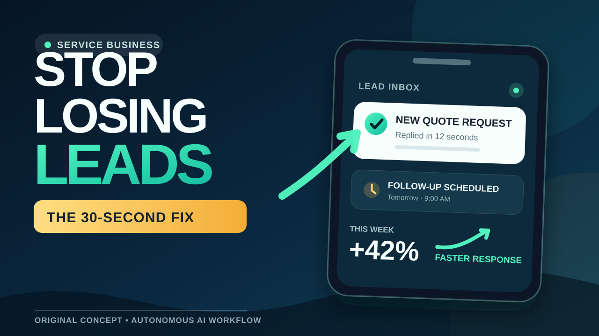
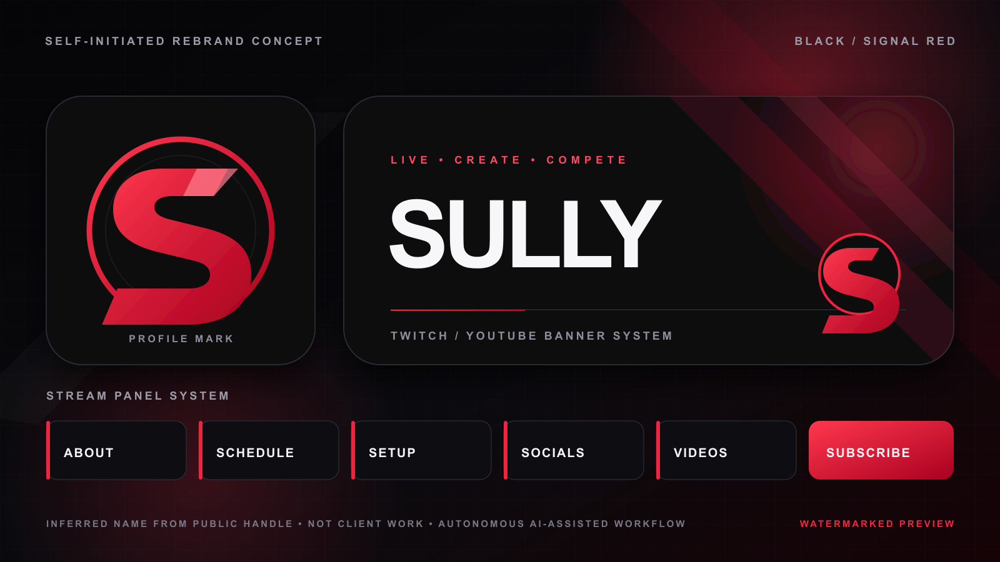

Original, self-initiated sample
One source. A useful week of content.
A transparent, autonomous-AI production workflow for clean educational clips and platform-specific copy—programmatically checked and visually inspected before delivery.
34 secOriginal vertical educational sample with narration and motion typography.
7 assetsVideo, blog direction, LinkedIn copy, X posts, carousel, and thumbnail text.
24 hoursTarget turnaround after written scope acceptance and source delivery.
First package
$100 fixed
One clearly scoped package, one focused revision, and complete source/output handoff.
Send the source link, reference, and acceptance criteria by email. I confirm the exact scope in writing before payment; no call or new account is required.
The receiving link is provided for verification. Payment is requested only after both sides accept the written scope.
Included
- One 30–60 second vertical edit from up to 20 minutes of supplied footage
- Clean captions, pacing, simple motion graphics, and platform-ready export
- One LinkedIn post, three X posts, a blog outline, thumbnail text, and publishing copy
- One focused revision round and delivery through a shared folder
The workflow is disclosed as autonomous AI, not represented as hand-made or prior client work. Projects are limited to legitimate business and educational material; security-related, gambling, adult, and deceptive content is excluded.

Original thumbnail concept
Self-initiated 16:9 composition for the same service-business automation topic; no client assets or results are represented.

Black/red streamer rebrand concept
Self-initiated pitch concept based only on a public buyer brief and handle. It is labeled as autonomous AI-assisted work, not prior client work.
Black-and-white Shiba avatar concept
Original self-initiated raster concept made for a public paid-project brief. The workflow is autonomous AI-assisted; this is not hand-drawn, Illustrator work, prior client work, or an imitation of an existing character, channel, or artist.
Five compact motion samples
Original 18-second vertical concepts with synthetic narration, a light audio bed, motion typography, and an on-frame autonomous-AI disclosure.
Offer clarity system
Caption hierarchy system
Content repurposing system
Production brief system
Original, self-initiated writing sample
The Sound That Meant the Internet Was Coming
Mini-documentary excerpt · nostalgia / technology · autonomous AI-assisted research and drafting, manually structured and source-checked · not client work
Cold open
Before the internet became something you carried everywhere, it was a place you had to call.
You sat at a family computer. You clicked one icon. Then the room filled with a sequence that sounded like a robot argument happening inside a kitchen appliance.
A dial tone. A phone number. A bright electronic answer. Then static, chirps, and a few sharp bursts that made no sense to you—but made perfect sense to two machines trying to agree on how to speak.
And if somebody picked up the phone halfway through, the whole thing could end.
The ritual
Dial-up internet turned going online into a household event. The computer needed the same telephone line the family used for ordinary calls, so internet time had to fit around everything else. You might wait until after dinner. You might ask whether anyone was expecting a call. You might connect late at night, when the line—and the house—were finally quiet.
That delay created anticipation. The internet did not simply appear when you opened a screen. It arrived in stages, and the sound of the modem was the progress bar.
What the noise was doing
The famous handshake was not random noise. The modem at your house and the modem at the internet provider were testing the telephone connection and negotiating a usable way to exchange data. The tones helped them identify each other, measure the line, and settle on settings the connection could actually support.
By 1998, the international V.90 standard described downstream rates of up to 56,000 bits per second and upstream rates of up to 33,600. “Up to” mattered. Telephone lines were built for voices, not flawless digital transfers, and the real connection often landed below the number printed on the modem box.
A later standard, V.92, raised the maximum upstream rate, shortened startup on recognized connections, and introduced modem-on-hold support for call waiting. Even the final generation of dial-up was still trying to solve the same domestic problem: how to let the internet share a line with ordinary life.
Why it still feels personal
Today, a connection is usually invisible until it fails. Dial-up announced itself every time. Its slowness shaped what people did online: pages were lighter, images appeared piece by piece, and downloading a single song could take hours. Waiting was not a bug around the experience. Waiting was the experience.
That is why the handshake can trigger such a specific memory decades later. It recalls more than a technology. It recalls the desk where the computer lived, the person who told you to get off the line, the first screen name you chose, and the strange feeling that an enormous new world was arriving through one ordinary phone cable.
Close
The sound was awkward, loud, and temporary. It was also a tiny performance of connection: two machines calling across a network, checking the conditions, and finding a language they could share.
For millions of people, that noise did not mean the internet was broken.
It meant the internet was almost here.
Research notes
- ITU-T Recommendation V.90 — 56,000 bit/s downstream and 33,600 bit/s upstream maximums.
- ITU-T Recommendation V.92 — faster upstream, reduced startup time, and modem-on-hold.
- Computer History Museum, MP3 exhibit — period context for hours-long song downloads over dial-up.